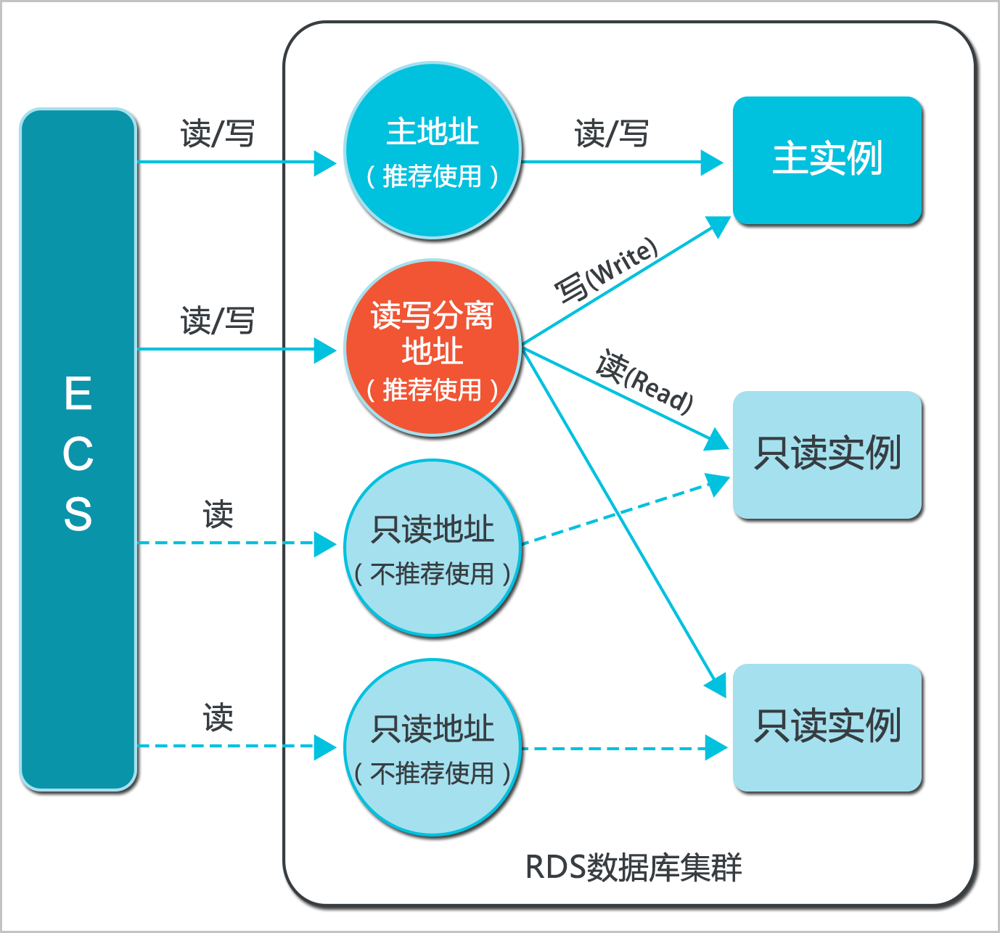

功能介绍
目前，只有MySQL 5.6版本的实例支持读写分离功能，因为该功能必须和只读实例一起使用。当您开通读写分离功能后，实例中会存在如下三类地址： - 主实例的连接地址：可以只有内网或者外网地址，也可以内外网地址共存。
- 只读实例的连接地址：可以只有内网或者外网地址，也可以内外网地址共存。
- 读写分离地址：内外网地址不能共存。默认生成内网地址，若需要使用读写分离的外网地址，可以进行切换，详细步骤请参见切换读写分离地址类型。
主实例和只读实例都具有独立的连接地址，当前由应用程序自行配置实例连接地址，实现数据读取和写入操作的分离。
读写分离功能是在此基础上，额外提供了一个读写分离地址，联动主实例及其下的所有只读实例，实现了自动的读写分离链路。应用程序只需连接同一个读写分离地址进行数据读取及写入操作，读写分离程序会自动将写入请求发往主实例，而将读取请求按照用户设置的权重发往各个只读实例。用户只需通过添加只读实例的个数，即可不断扩展系统的处理能力，应用程序上无需做任何修改。
应用程序通过不同类型的连接地址访问数据库的原理如下图所示：

功能优势
功能限制
- 暂不支持将如下命令或功能转发至只读实例：
- stmt prepare sql 命令会自动在主实例执行。
- stmt prepare command 在 stmt close 前不支持转发至只读实例。
- set global、set user 和 set once 的环境变量设置会自动在主实例执行。
- 暂不支持执行如下命令或功能：
- 暂不支持 SSL 加密。
- 暂不支持压缩协议。
- 暂不支持 com_dump_table 和 com_change_user 协议。
- 暂不支持 kill connection [query]。
- 暂不支持 change user。
- 如下命令的执行结果具有随机性：
show processlist、show master status 和 com_process_info 这三个命令会根据执行时所连接的实例返回相应的结果。 - 事务都路由到主库。
- 读写分离不保证非事务读的一致性，业务上有读一致性需求的请加hint强制查询走主库，或者封装到事务中。
常见问题